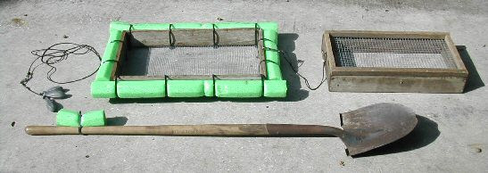
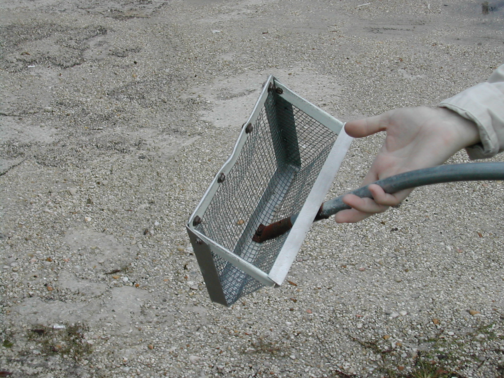
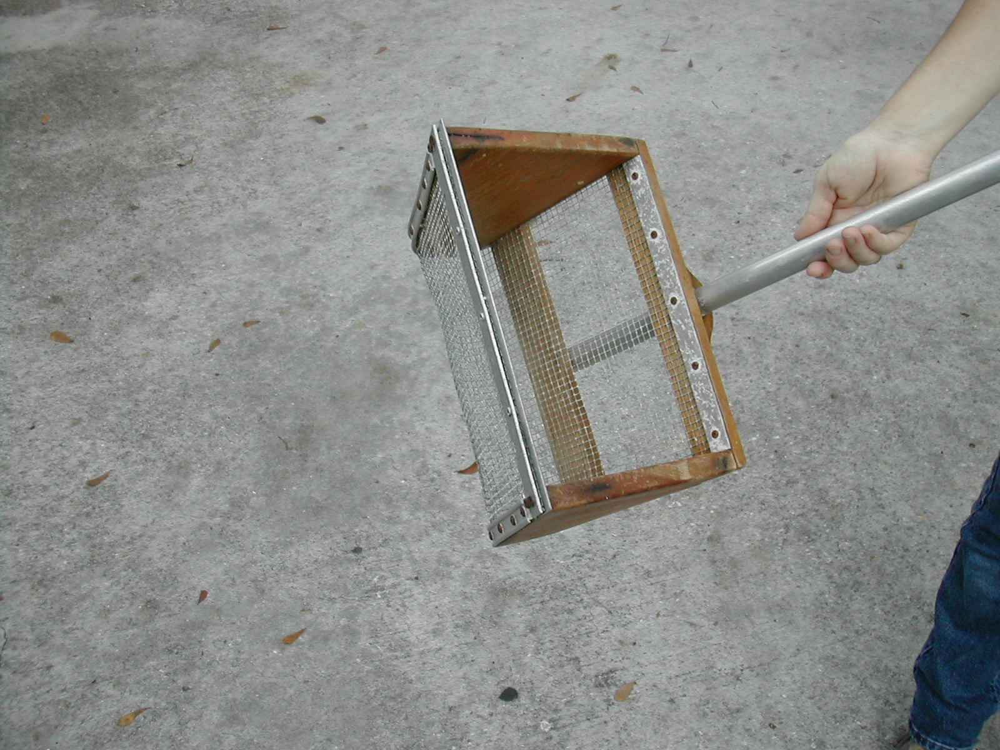
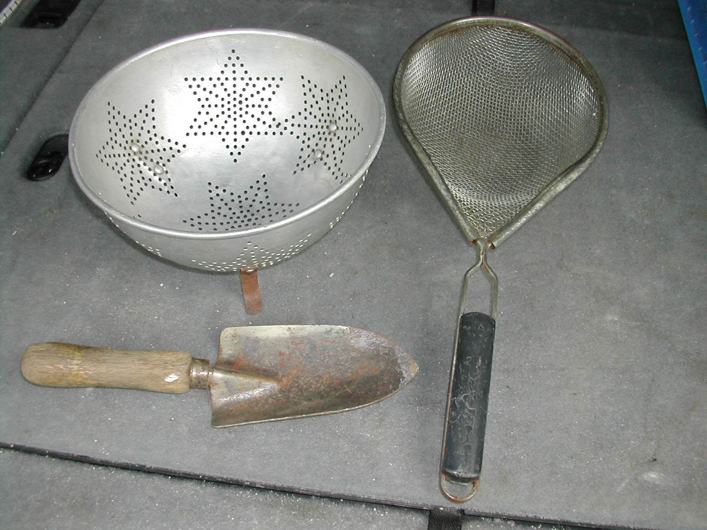

Fossil Collecting Equipment
PEACE RIVER SCREEN
What is the best screen for the Peace River??
My preference is for a double screen system. What is that?
Well here is what I mean.
Build a frame using 1x4 lumber from Home Depot, pressure treated
if they have it, that is about 12" x 18". Screw it together with
corrosion resistant deck screws. To this put on 1/4 inch mesh
screen. Now attach floats, I use those noodles the kids play with
in pools, around all four sides with tie straps. To one end attach
a cord or small rope about 5 or 6 feet long and put a weight on
the end to keep your screen from floating down stream while you
work.
Now make a smaller frame which will fit inside the one you have
just built. On top of this frame put 1/2 inch screen. Do not put
noodles on this screen, but put a 12 inch cord from the large
screen to the small screen, on the end away from your anchor rope.
I use snaps on both my anchor rope and my screen rope, so I can
change them if necessary.
Next, fix your shovel by tying a 10 inch piece of noodle near the
top of the handle. This way the handle floats up for you to find
after you have looked at your screen.
Your finished assembly should look something like the photo below.

To use this system, find your spot to dig in the river and put
your anchor up stream so the screen stays beside you, but not over
the hole where you are digging. Next put the small screen inside
the big screen so the 1/2 inch mesh is on top. Put on two or three
shovels of gravel and shake. Scan the top screen for anything nice
then empty it to the side and check the lower screen for smaller
items without the hassle of moving the large rocks around while
you are trying to look
VENICE SCREENS
The Venice Screen, sometimes called the Florida Snow Shovel, is
great for scooping up sand and shark teeth at the beach from Venice
down to Englewood. The small scoop is available at many local
convenience stores in the beach area while the larger homemade
scoop was made for me by a friend. They also work in the river,
but the many rocks and limestone outcroppings limits their
usefulness.


Mom's Kitchen Cabinet
If you find yourself heading for the river or beach and do not have
time to build a screen or are afraid the local convenience store
may not sell Venice Scoops, you can raid the kitchen cabinet, with
Mom's permission. A colander or strainer and small shovel will save
the day and help you find a souvenir or two.

Fred Hendershot
Field Trip Director